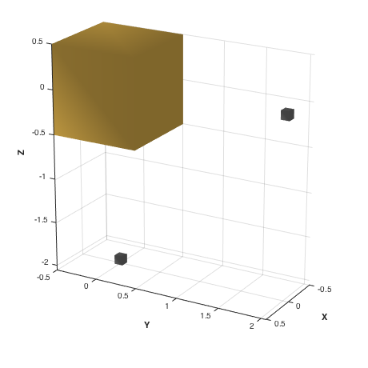
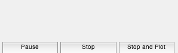
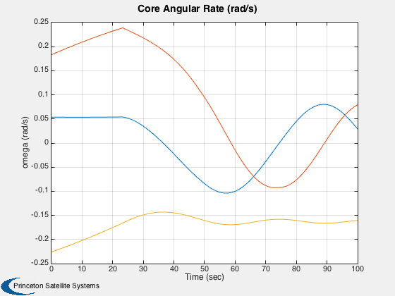
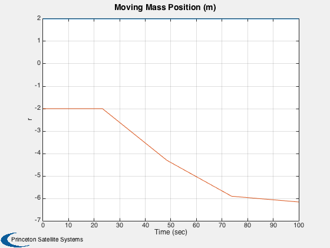
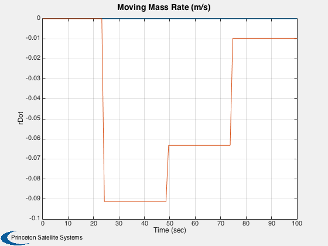
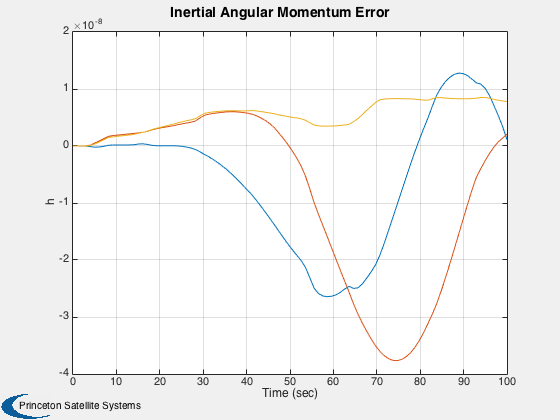

Demonstrate the moving body attitude RHS.
Assumes moving bodies instantaneously achieve new velocities, which is appropriate for stepping motors. One of two moving masses is given a random velocity at specific times and angular momentum is seen to be conserved. To verify, switch between high and low tolerance and check the magnitude of the momentum error.
------------------------------------------------------------------------ See also FMovingBody, FCoreAndMoving, DrawSCPlanPlugIn, QTForm, QZero, Plot2D, TimeGUI, TimeLabl ------------------------------------------------------------------------
Contents
%------------------------------------------------------------------------------- % Copyright (c) 2006 Princeton Satellite Systems, Inc. All rights reserved. % Comprehensive Solar Sail Simulation SBIR NNM06AA38C %------------------------------------------------------------------------------- % Since version 7. %------------------------------------------------------------------------------- %%%%%%%%%%%%%%%%%%%%%%% % User Options tolerance = 'low'; % 'high' or 'low' %%%%%%%%%%%%%%%%%%%%%%%
Global for the time interface
%------------------------------ global simulationAction simulationAction = ' '; dontPlot = 0;
Load and draw the model
%------------------------ d.g = load('MovingMassModel.mat'); tag = DrawSCPlanPlugIn( 'initialize', d.g ); view(120,20) % Assemble the state vector. 13 states for each body.
Each state vector is [r;v;q;w]
%----------------------------------------------------
rng(0);
wCore = randn(3,1)*0.1;
xCore = [zeros(6,1);QZero;wCore];
xMass1 = [[0;2;0];zeros(10,1)];
xMass2 = [[0;0;-2];zeros(10,1)];
x = [xCore;xMass1;xMass2];
d.nBody = 3;
Specify zero force and torque
%------------------------------
d.force.total = [0;0;0];
d.torque.total = [0;0;0];
The number of steps
%--------------------
nSim = 100;
Create the time array
%---------------------- tDuration = 100; % seconds t = linspace(0,tDuration,nSim); dT = t(2)-t(1);
Specify the ode accuracy
%------------------------- switch tolerance case 'low' tolSet = [1e-8 1e-5]; case 'high' tolSet = [1e-5 1e-3]; otherwise error('Tolerance must be ''high'' or ''low''') end xODEOptions = odeset( 'AbsTol', tolSet(1), 'RelTol', tolSet(2) );
Plotting and initialization
%---------------------------- xPlot = zeros(length(x),nSim); hPlot = zeros(3,nSim); [xx,h] = FMovingBody( 'init', x, x, [], d ); h0 = QTForm( x(7:10), h ); xPlot(:,1) = x;
Initialize the time display
%---------------------------- dTSim = dT; tToGoMem.lastJD = 0; tToGoMem.lastStepsDone = 0; tToGoMem.kAve = 0; ratioRealTime = 0; [ ratioRealTime, tToGoMem ] = TimeGUI( nSim, 0, tToGoMem, 0, dT, 'Solar Sail Simulation' );
Simulate
%--------- disp('Running MovingBodyDemo simulation.') for k = 2:nSim % Display the status message %--------------------------- [ ratioRealTime, tToGoMem ] = TimeGUI( nSim, k, tToGoMem, ratioRealTime, dT ); % If the rate is changed %----------------------- if sum( k == floor(nSim*[1/4 1/2 3/4]) ) disp('Update velocities.') %vNew = rand(2,1)/10; vNew = [0 rand(1,1)]/10; xNew = x; xNew(18) = vNew(1); xNew(32) = -vNew(2); [x, h] = FMovingBody( 'init', x, xNew, [], d ); end % Propagator %----------- [z, x] = ode113( 'FCoreAndMoving', [t(k-1) t(k)], x, xODEOptions, d ); x = x(end,:)'; [xx,h] = FMovingBody( 'init', x, x, [], d ); xPlot(:,k) = [x]; hPlot(:,k) = QTForm(x(7:10), h) - h0; % User controls on the TimeGUI %----------------------------- switch simulationAction case 'pause' pause simulationAction = ' '; case 'stop' dontPlot = 1; break; case 'plot' break; end end
Running MovingBodyDemo simulation. Update velocities. Update velocities. Update velocities.

Close the TimeGUI
%------------------- close( tToGoMem.hGUI.fig ); disp('Finished.') if( ~dontPlot ) % Truncate the arrays if the sim stopped early %--------------------------------------------- j = 1:k; x = xPlot(:,j); h = hPlot(:,j); % Get the time labels %-------------------- [t, c] = TimeLabl( t(j) ); % Plot %----- Plot2D( t, x(11:13,:), c, 'omega (rad/s)', 'Core Angular Rate (rad/s)' ); Plot2D( t, x([15 29],:), c, 'r', 'Moving Mass Position (m)' ); Plot2D( t, x([18 32],:), c, 'rDot', 'Moving Mass Rate (m/s)' ); Plot2D( t, h, c, 'h', 'Inertial Angular Momentum Error' ); end %-------------------------------------- % PSS internal file version information %--------------------------------------
Finished.   